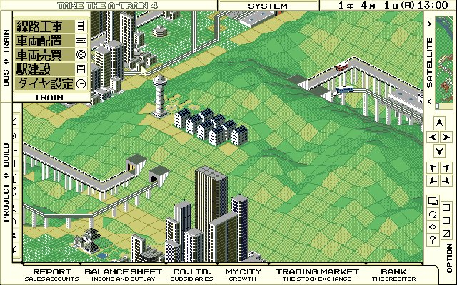
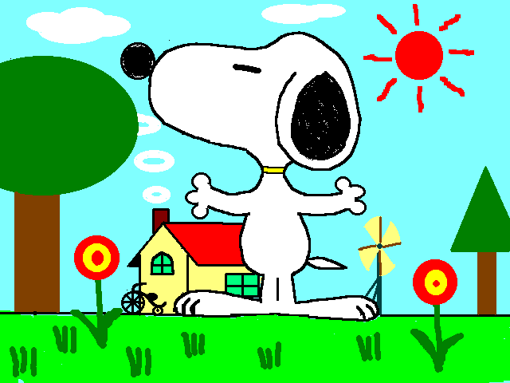

This is a block of text for a test. It doesn't matter what it says, it just needs to show some text. I can't be bothered to find some example
text to copy and paste here so I'll write it myself. All that matters is it says some text and there is some formatting eventually, maybe an image or two.
Text should probably be split up into readable chunks regularly - that seems to be how modern news sites do it, and people are used to just reading
in tweets now anyway. I should also be writing these in something with spellcheck rather than Visual Studio because I can't spell for shit.
Anyway, here's a picture of something to test:

A screenshot from the game "Take The A-Train 4" for PC-98
Now for more words. There'll probably need to be more ways of displaying text and stuff depending on the article content but I'll figure that out when
I get to it. Gifs and video clips will need to be involved. I'll write some more text to space it out a bit first then have an example video.
It's a good thing I wrote so many write-ups for the Protoworld newsletter because now I just know how to do this stuff no problem. I never used html
as a kid on Neopets or anything but I can see how a kid could learn the basics, it's pretty simple.
Now let's put in a video:
A video clip from the anime "Time Bokan"
There we go, looks good. Maybe I'll use gifs more though to save space, since I'm using the free GitHub Pages hosting and I don't think it gives
you very much room. I could also link externally to Youtube hosted videos but that's effort. I'll just worry about space if I even get to the point
where I need to.
This is looking more or less long enough for a test. I'll probably have to try and avoid writing articles that are too long or nobody will read them.
Then again, who cares, maybe I should just write them as long as I want to because it's my sleepover (website) and I get to pick the movie (how long my
articles get to be).
Here's another chunk of text just to make it look a bit better visually before I link another picture thing. This is me typing words to fill out space.
There's no heating on in my office and my hands are so cold that typing is really clumsy LOL.
Let's do the thing where a picture is on one side and text is on the other:
This is text that goes on the left side of the article. An image should appear next to it on the right.
How does text formatting look like in here? Let's write some more words so I can see.
Seems to look good, will need to write enough for it to be worth it.
I love SNOOPY.bmp, one of my greatest treasures.

Let's start ending the article now. Here's more words to bulk things out. I'm going to go downstairs after this and have some food and warm up my hands.
I also need to figure out why my keyboard is typing double quotations and apostrophes by default whenever I type just one, it's very annoying.
Oh, it's
because I'm writing this in Visual Studio. Another reason I should really be writing this in something else, but I like to check how it looks in browser as
I type. Maybe there's a program for writing html in and seeing how it looks that also has spellcheck, I'll have to see.
Okay this can be the end of the article. How should I end these things? It will probably depend on whatever the content was. I might also say like,
thanks for reading! Stuff like that. I should also have some kind of button layout at the very bottom of the page for going to the next or previous
article? That would be cool, let's do it. After I go warm up my hands.
 Files Found!
Files Found!